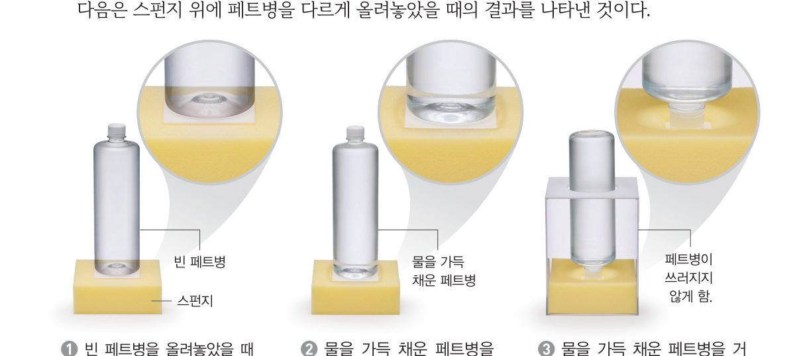
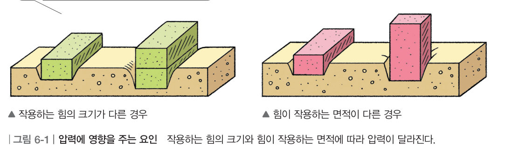
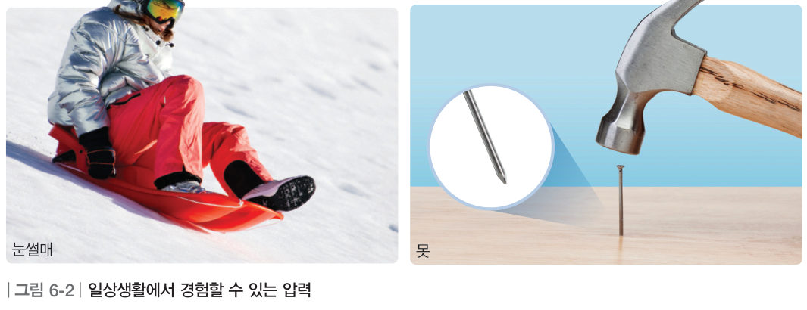
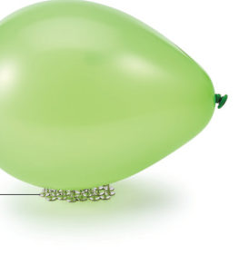

“발이 빠져서 걷기가 힘들어.” “너도 널빤지를 이용해 봐.” 갯벌에서 널빤지를 타면 왜 덜 빠질까? 가상 스펀지 위에 페트병과 벽돌을 올리고, 누름못 위에 풍선을 올려 보며 압력의 뜻을 알아보자.
🎯 이 단원을 배우면 — 압력의 뜻을 알고 설명할 수 있다.
단원 열기1. 기체의 압력 197쪽
동생과 물총 놀이를 했어. 물 뿜는 인형이나 물총 속에는 물과 공기만 들어 있는데, 물이 뿜어져 나오는 게 신기해.
첫 번째 블록
물 뿜는 인형에서 물은 어떻게 뿜어져 나올까?
‘일정한 면적에 작용하는 힘’(198쪽)과 ‘기체의 압력’(200쪽)의 블록을 모으면 답할 수 있어요. 🧩
✔이 단원과 관련해 이미 알고 있는 것을 모두 골라 보자.
해 보기일정한 면적에 작용하는 힘 알아보기 198쪽
압력은 무엇일까?
갯벌에서는 걸을 때마다 발이 빠져서 걷기가 힘들다. 이때 널빤지를 타면 걸을 때보다 덜 빠져서 쉽게 이동할 수 있다. 다음은 스펀지 위에 페트병을 다르게 올려놓았을 때의 결과를 나타낸 것이다.

198쪽① 빈 페트병 ② 물을 가득 채운 페트병 ③ 물을 가득 채운 페트병을 거꾸로
가상 실험가상 스펀지에 페트병 올려놓기
페트병에 든 물의 양과 놓는 방향을 바꿔 보자. 스펀지가 눌린 깊이와 아래 계기판의 무게, 닿는 면적을 비교해 봐요. 세 가지 경우를 모두 올려 보면 기록표가 채워져요.
페트병의 무게-
스펀지에 닿는 면적-
1 cm²에 작용하는 힘-
스펀지가 눌린 깊이-
1①과 ②를 비교하면 이/가 달라서 스펀지가 눌린 정도가 다르다. ②와 ③을 비교하면 이/가 달라서 스펀지가 눌린 정도가 다르다.
2스펀지가 깊이 눌린 순서대로 늘어놓아 보자. (위가 가장 깊음)
① 빈 페트병을 바로
③ 물을 가득 채운 페트병을 거꾸로
② 물을 가득 채운 페트병을 바로
3페트병을 올려놓는 방법에 따라 스펀지의 눌린 정도가 다른 까닭을 이야기해 보자.
교과서압력의 뜻 199쪽
스펀지 위에 벽돌을 올려놓을 때 스펀지가 눌리는 정도는 그림 6-1과 같이 벽돌의 개수나 모양, 즉 작용하는 힘의 크기나 그 힘을 받는 면적에 따라 달라진다. 이때 일정한 면적에 작용하는 힘을 압력이라고 한다. 압력은 작용하는 힘의 크기가 클수록, 힘이 작용하는 면적이 좁을수록 커진다.

그림 6-1압력에 영향을 주는 요인 — 작용하는 힘의 크기와 힘이 작용하는 면적에 따라 압력이 달라진다.
가상 실험모래 위의 벽돌 두 무더기
왼쪽(A)과 오른쪽(B) 벽돌의 개수와 놓는 방향을 정해 보자. 모래가 더 깊이 파이는 쪽이 압력이 더 큰 쪽이에요.
1그림 6-1 따라 하기 (가) A: 눕힌 벽돌 1개, B: 눕힌 벽돌 2개 → 압력이 더 큰 것은 (나) A: 눕힌 벽돌 1개, B: 세운 벽돌 1개 → 압력이 더 큰 것은
2도전 A: 눕힌 벽돌 2개, B: 세운 벽돌 1개 → 모래가 더 깊이 파이는 것은
교과서일상생활에서 경험할 수 있는 압력 199쪽
우리는 그림 6-2와 같이 여러 가지 상황에서 압력을 경험할 수 있다. 눈썰매는 힘이 작용하는 면적이 넓어 압력이 작으므로 눈밭에 빠지지 않고 쉽게 이동할 수 있다. 반면 못의 뾰족한 끝부분은 힘이 작용하는 면적이 좁아 압력이 크므로 단단한 벽이나 나무에 못을 쉽게 박을 수 있다.

그림 6-2일상생활에서 경험할 수 있는 압력
1면적을 넓혀 압력을 작게 하는 것을 모두 골라 보자.
가상 실험누름못 위의 풍선 199쪽

199쪽누름못 위의 풍선
풍선 위에 책(무게 10 N)을 올려놓고 누름못의 개수를 바꿔 보자. 누름못 한 개의 끝이 받는 압력이 풍선이 견딜 수 있는 한계(빨간 선)를 넘으면 ‘펑!’ 터져요.
1책을 올렸을 때 풍선이 터지지 않는 가장 적은 누름못의 개수는 개이다.
스스로 확인하기198쪽 학습 목표를 달성했는지 확인해 보자 199쪽
1개념 확인 압력은 작용하는 ( )의 크기와 힘이 작용하는 ( )에 따라 달라진다.
2사고력 누름못 1 개 위에 올린 풍선은 터졌지만, 누름못 30 개 위에 올린 풍선은 터지지 않았다. 그 까닭을 압력과 관련하여 설명해 보자.
🧩 첫 번째 블록 · 힌트 조각 1 (199쪽)
일정한 면적에 작용하는 힘을 ( )(이)라고 한다. → 다음 조각은 ‘기체의 압력’에서!
5분 테스트일정한 면적에 작용하는 힘
1일정한 면적에 작용하는 힘을 이라 한다. 압력은 작용하는 힘의 크기가 커지고, 작용하는 이 좁을수록 커진다. 같은 크기의 힘으로 연필 양쪽을 누르면 뭉툭한 쪽보다 뾰족한 쪽의 손가락이 더 깊이 눌린다. 이는 연필의 뾰족한 쪽이 힘을 받는 면적이 더 때문이다.
2대형 트럭의 바퀴 수가 많은 까닭은 면적을 압력을 하기 위해서이다. 설피를 신고 눈 위를 걸으면 발이 잘 빠지지 않는 까닭은 면적을 압력을 하기 위해서이다.
3일상생활에서 경험할 수 있는 압력이면 O, 아니면 X를 골라 보자.
⑦ 단단한 벽이나 나무에 못을 쉽게 박을 수 있다.
⑧ 마약 탐지견이 냄새로 마약을 찾는다.
⑨ 고추를 오래 보관하기 위해 말린다.
⑩ 눈썰매를 이용하면 눈밭에 빠지지 않고 쉽게 이동할 수 있다.
스스로 정리하기압력 204쪽
1압력
(1) 압력: 일정한 면적에 작용하는 (2) 압력의 크기 · 힘이 작용하는 면적이 같을 때: 작용하는 힘의 크기가 압력이 커진다. · 작용하는 힘의 크기가 같을 때: 힘이 작용하는 면적이 압력이 커진다. (3) 일상생활에서 경험할 수 있는 압력 · 눈썰매: 힘이 작용하는 면적이 넓어 압력이 . · 못: 힘이 작용하는 면적이 좁아 압력이 .
제출학생 정보 · 제출하기
모든 활동을 마친 뒤 제출하면 전체가 한 번에 채점되고 피드백이 나타나요. 답안은 선생님 스프레드시트(중1 탭)에 기록돼요.